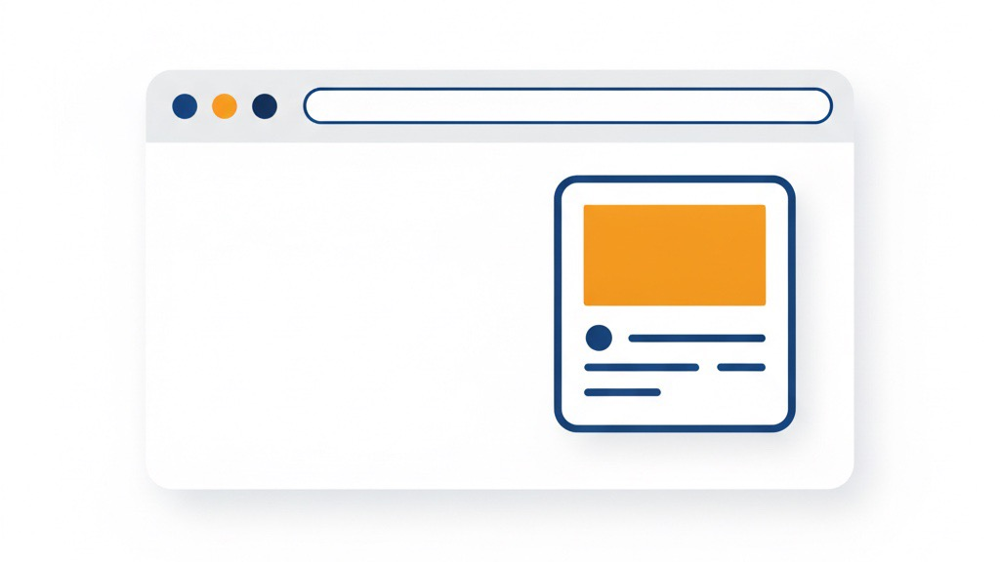

「できます」より「やってきました」 ——説明ページを削り、ブログを前面に出してサイトを作り直して気づいたこと
業務改善コラム ／ 集客・見える化 ／ 読了目安：約8分
自社サイトを久しぶりに開いて、正直うわっと思いました。説明が多すぎる。できること、強み、対応範囲——どの見出しを読んでも、「主語がうち」の文章ばっかりでした。
読む人は、私が「できます」と言うから信じるんやなくて、「やってきた」という跡を見て決めるはずで。そう思ったとき、サイトの考え方ごと入れ替えなあかんなと。
きっかけ——「説明」は多いのに伝わらない
サイトを作るとき、私も「情報をきちんと載せなあかん」と思っていました。サービスの説明、対応範囲、強み、実績数字。丁寧に並べれば伝わるやろう、と。
でも実際は逆でした。情報が多いほど、読まれない。項目が増えるほど、「結局何の会社なのか」がぼやける。自分のサイトが、まさにそれでした。
「何をやってる会社なのか、一読してわかりにくい」と言われたとき、最初は「説明が足りひんのかな」と思ったんです。でも見返したら、説明はむしろ多すぎるほど書いてある。問題は量やなくて、何を主役に置いているかでした。
白の面積を31%から74%に増やした理由
作り直しで最初に手をつけたのは、文章でも機能でもなく「余白」でした。サイト全体の白（背景・余白・空き）の面積を測ったら、改修前は約31%。これを約74%まで引き上げました。（この数字は、トップページの画面を上から下までひと続きの画像として書き出し、そのなかで白・余白が占める面積の割合を測ったものです）
数字だけ見ると「スカスカにならへんか」と思われるかもしれません。私も直前まで不安でした。でも実際は逆で、余白が増えると残った要素の存在感が上がる。「何もない」んやなくて、「本当に見てほしいものだけが残る」状態です。
何を残して何を省くかを決めるのが、サイト設計のいちばん重い作業やと思ってます。白の面積を増やすには、先に「なくてよいもの」を選ばなあかんので。
色も一緒に整理しました。緑を全面に使っていた配色から、白を主役・緑をアクセントに切り替えています。余計なものを減らして、文章と写真がすっと目に入る状態にしたかった。

ブログを主役に置く設計変更の中身
構成でいちばん大きく変えたのは、トップページで「ブログ欄を上に格上げした」ことです。前はサービス説明の後、かなり下の方にブログへのリンクを置いていました。今は、サービスの短い紹介のすぐ後にブログ記事の一覧が来ます。
理由は単純で、「できます」という自己申告より、具体的なテーマで書かれた記事の積み上げのほうが読んだ人の材料になる、と思ったからです。
- サービス説明：うちが「できると主張している」もの
- ブログ記事：うちが「実際に考えて、動いてきた」記録
後者を読んで「この人ら、自分の困りごとに近いことを日々やってるな」と感じてもらえたら、それが相談のきっかけになります。記事は、私が寝てる間も動いてくれてる営業担当みたいなもんやと思ってます。
「毎週1本」を仕組みで担保する
ブログを主役にすると決めた瞬間に、次の不安が来ます。「続けられるんか」と。忙しくなったら後回しになって、気づいたら半年止まってる。そうなったら主役不在のサイトです。
なので私は、書いてから公開までの一部を自動化しました。原稿さえある状態なら、毎週決まった時間にサイトへ自動で公開されるところまで流れを組んでいます。「書く」は人の仕事として残りますが、「公開する」「確認する」「SNSでお知らせする」は仕組みに渡した。おかげで続ける手間がだいぶ減りました。
「どんな記事を書くか」より「どうやったら書き続けられるか」を先に考えたほうが、結局は記事が積み上がりました。完璧な1本より、続いた10本のほうが信頼になると思ってます。
記事が積み上がると何が変わるか
記事を続けて出していくと、サイトの性格が少しずつ変わってきました。最初のうちは「新しい記事を書いた」というだけの単発の更新です。それが10本、20本と増えると、記事同士がテーマでつながって、「このサイトにはこの分野の話が溜まってるな」という感じが出てきます。
読む人の動きも変わります。1本読んで帰ってしまうんやなくて、関連する記事を読み進めてくれる。検索であるひとつの言葉から入ってきた人が、別の記事も読んで「ここに相談してみよかな」と思う。その流れができてきました。
広告とは信頼の積み上げ方が違うんやと思います。広告は予算がある間だけ動きますが、記事は出した後もずっとそこにある。書いた当日より、1年後のほうが読まれていることもあります。
「削る」ことへの怖さと、その先にあるもの
正直、サービス説明の項目を減らすのは怖かったです。「これ消したら、伝わらへんのちゃうか」と何回も手が止まりました。笑
でも実際は、削ったことで残った情報のほうが目立つようになりました。全部見せようとすると、何も見てもらえない。これはサイトだけの話やなくて、提案書も資料もメッセージも同じやと思ってます。
載せるか迷ったときは、自分が「載せたいか」やなくて、読んだ相手が「何か動きたくなるか」で決めるようにしています。そのほうが早く整理できました。
「できます」という説明より、「やってきました」という記録のほうが、読んだ人は安心してくれる。今のサイトはこの一点で組み直しました。記事を増やすのは、信頼の貯金を少しずつ積む作業やと思ってます。
自社サイトの「伝わらない」を整理したい方へ
「説明は書いてるのに問い合わせが来ない」「何を削ったらいいか分からない」——同じことで困ってる人がいたら、LINEで気軽に話しましょう。予約も電話も要りません。メッセージを1本もらえたら十分です。
LINEで相談する